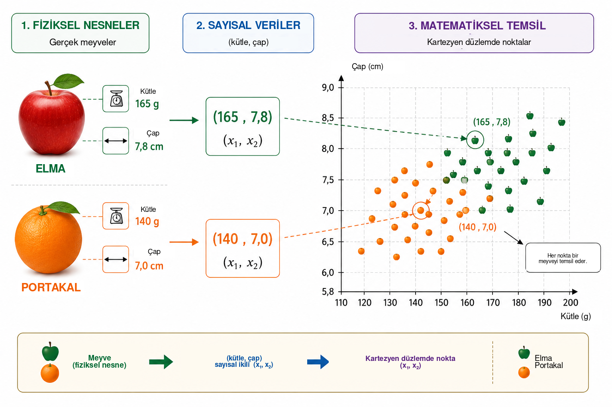
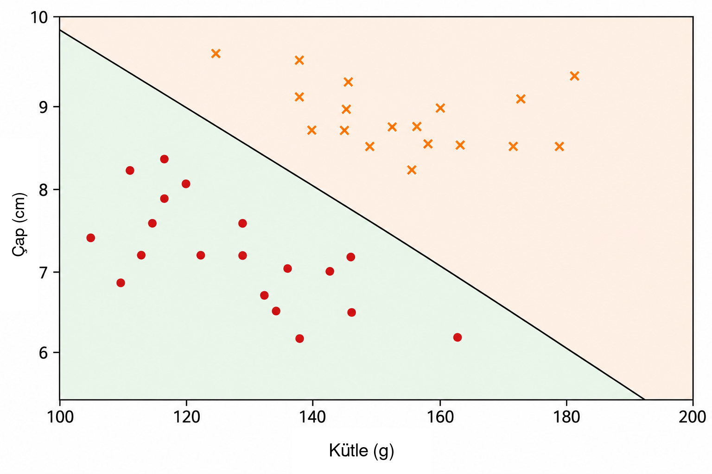
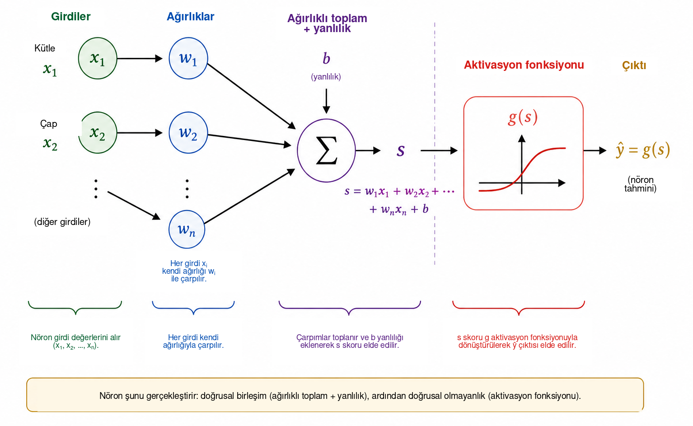
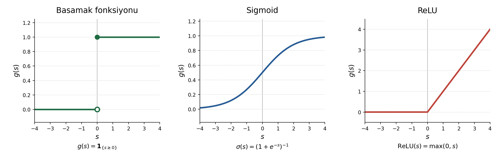
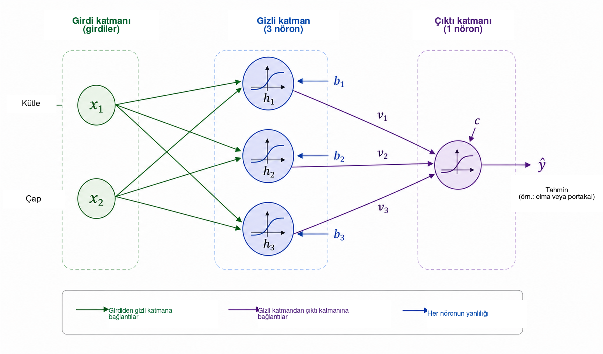
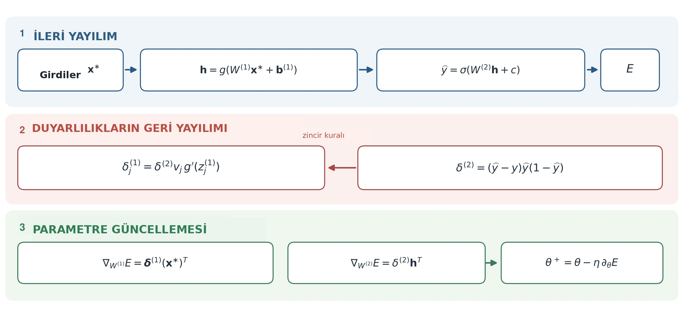
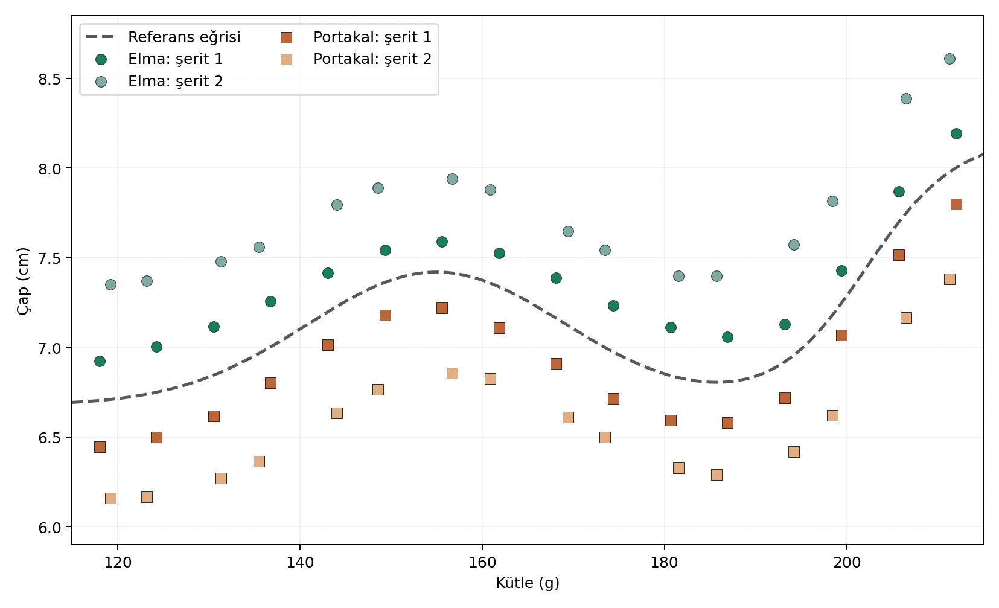
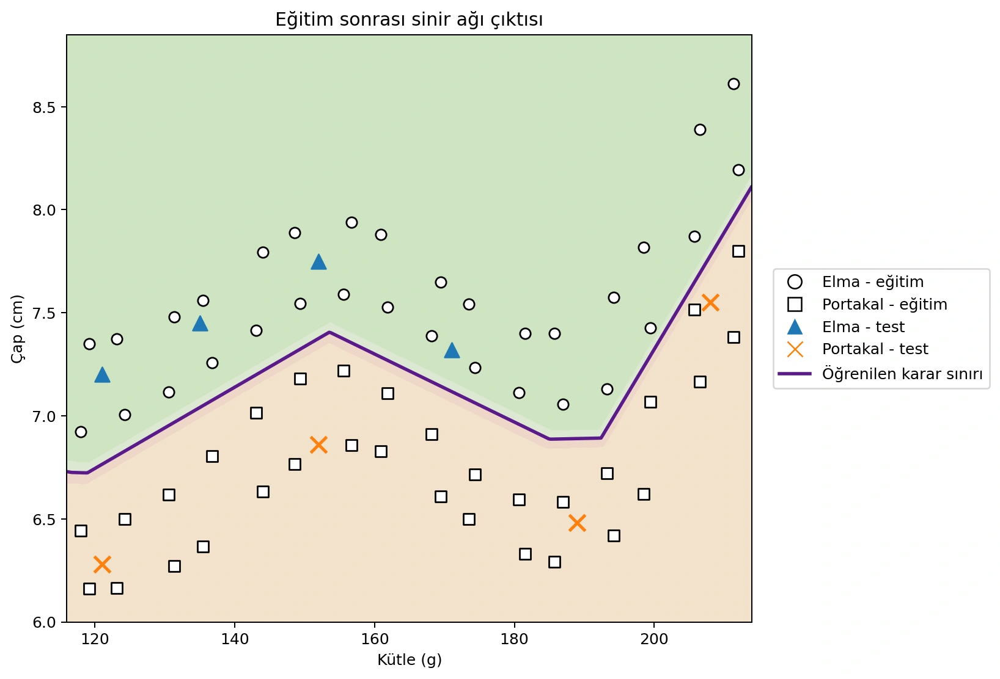

Bir bilgisayar ne zaman öğrenebilir?
Günlük yaşamda, çoğu zaman farkına bile varmadan sınıflandırma kararları veririz. Bir meyveye bakarak onun elma mı yoksa portakal mı olduğunu hızla ayırt ederiz; telefona bir mesaj geldiğinde gerçek bir konuşmayı istenmeyen reklamlardan ayırırız; tıbbi analizlerde bir kararı desteklemek için birden çok ölçüm birlikte değerlendirilebilir; finans kuruluşlarında ise kredi verilmeden önce çeşitli bilgiler incelenir. Tüm bu örneklerde bir yanıt üretmek için birden fazla özellik birlikte ele alınır.
Birçok geleneksel bilgisayar programında bu yanıtı üreten kurallar programcı tarafından açıkça yazılır. Kurallar biliniyor ve açık bir biçimde ifade edilebiliyorsa bu yaklaşım iyi çalışır. Veriler çok değişkense ya da iyi bir karar için gerekli tüm koşulları önceden formüle etmek zorsa daha az etkili olur. Bu durum doğal bir soruya yol açar:
Karar kuralını önceden almak yerine örneklerden öğrenen bir program oluşturabilir miyiz?
Bu, verilerden model uyarlayan yöntemleri inceleyen yapay zekâ alanı olan makine öğrenmesinin temel fikirlerinden biridir . Gözetimli öğrenme probleminde algoritmaya doğru yanıtlarıyla birlikte örnekler verilir ve eğitim sırasında kullanılmamış durumlar için de yararlı tahminler yapabilen bir model aranır. Bu amaçla geliştirilen birçok model arasında yapay sinir ağları, görüntü tanıma, dil işleme, sinyal analizi ve zaman serisi tahmini gibi uygulamalarda önemli bir yer edinmiştir .
Sinir ağlarının matematik, hesaplama ve okul eğitimi arasında bir köprü olarak kullanılması, öğretmen eğitimi, Python ve rakam tanıma içeren bir etkinlik sunan Batista ve Martins tarafından Professor de Matemática Online dergisinde daha önce ele alınmıştır . Bu makale tamamlayıcı bir yol izlemektedir. Temel amacımız, analitik geometriden başlayıp adım adım gradyan hesabına ve geri yayılımın elle uygulanmasına ilerleyerek küçük bir sinir ağının iç matematiğini ortaya koymaktır.
Modern uygulamaların karmaşıklığına rağmen, bir sinir ağının matematiksel özü oldukça tanıdık fikirlerle tanıtılabilir. Temel düzeyde bir sinir ağı, parametreleri verilerden ayarlanan fonksiyonların bileşimidir. Basit bir geometrik problemle başlıyor, ayırıcı bir doğruyu yapay nöron olarak yeniden yorumluyor, birkaç nöronu birbirine bağlıyor, aktivasyon fonksiyonlarının rolünü inceliyor ve türevlerin ağ parametrelerini otomatik olarak ayarlamak için nasıl kullanılabileceğini gösteriyoruz. Ardından denklemler ile kod arasındaki doğrudan karşılığı koruyarak Python’da küçük ama eksiksiz bir örnek uyguluyoruz.
Problemin matematiksel olarak temsil edilmesi
Bir sinir ağının nasıl çalıştığını anlamak için bilinçli olarak basit bir problemle başlıyoruz: elmaları portakallardan ayırmak. Bir meyvenin renk, kütle, çap, doku ve koku gibi bu görev için yararlı olabilecek birçok özelliği vardır. Ancak ilk matematiksel modelin bu karmaşıklığın tamamını içermesi gerekmez. Yalnızca kolayca ölçülebilen iki büyüklük kullanacağız: gram cinsinden kütle ve santimetre cinsinden çap.
Bu nedenle her meyve sıralı bir ikili ile temsil edilecektir \[(x_1,x_2),\] burada \[x_1=\text{kütle} \qquad\text{ve}\qquad x_2=\text{çap}.\]
Böylece \((155,\;7.2)\) ikilisi, kütlesi \(155\) g ve çapı \(7.2\) cm olan bir meyveyi temsil eder. Fiziksel nesneyi iki sayısal ölçümle değiştirerek her meyveyi Kartezyen düzlemde bir noktayla ilişkilendiririz: birinci koordinat kütleyi, ikinci koordinat ise çapı gösterir. Şekil 1, varsayımsal bir elma ve portakal kümesi için bu temsili göstermektedir.

Bu dönüşüm problemin görünür doğasını değiştirir. Bir elmayı ya da portakalı doğrudan nasıl tanıyacağımızı sormak yerine geometrik bir soru sorabiliriz: iki sınıfa ait noktalar düzlemde nasıl ayrılabilir? Bu bakış açısı değişikliği makine öğrenmesinde temeldir. Görüntüler, metinler, sesler ve deneysel sinyaller bir algoritma tarafından işlenmeden önce sayısal temsillere dönüştürülmelidir. Örneğimizde her nesnenin yalnızca iki koordinatı vardır; gerçek uygulamalarda bir temsil yüzlerce, binlerce hatta milyonlarca bileşen içerebilir. İlke aynıdır: her örnek bir sayı kümesiyle ilişkilendirilir ve model bu temsili istenen yanıta eşleyen bir kural arar.
En basit geometrik kuralla başlıyor ve tek bir doğrunun elma noktalarını portakal noktalarından yeterince iyi ayırıp ayıramayacağını soruyoruz.
Sınıflandırıcı olarak bir doğru
Her meyve Kartezyen düzlemde bir nokta ile temsil edildiğinde sınıflandırma geometrik bir probleme dönüşür: bir doğru elmaları portakallardan ayırabilir mi? Bu soru, doğrusal sınıflandırıcılar olarak bilinen önemli bir makine öğrenmesi yöntemleri ailesinin temel fikrini ifade eder.
Şekil 2’de gösterildiği gibi veri bulutunu kesen bir doğru düşünelim. Doğru, düzlemi iki yarı düzleme böler. Elma noktalarının çoğu bir tarafta, portakal noktalarının çoğu diğer tarafta bulunuyorsa, yeni bir meyvenin doğruya göre konumu sınıflandırma kuralı olarak kullanılabilir. Kütlesi ve çapı ölçüldükten sonra meyveyi bir noktayla temsil eder ve bu noktanın doğrunun hangi tarafında olduğunu belirleriz.

Kartezyen düzlem \((x_1,x_2)\) üzerinde bir doğru şu şekilde tanımlanabilir \[w_1x_1+w_2x_2+b=0, \qquad (w_1,w_2)\neq(0,0).\]
\((w_1,w_2)\) vektörü doğruya diktir ve bu nedenle yönelimini belirler; \(b\) parametresi ise konumuna katkıda bulunur. Bu temsil küçük bir fazlalık içerir: \(w_1\), \(w_2\) ve \(b\) değerlerini aynı sıfırdan farklı sabitle çarpmak tam olarak aynı doğruyu üretir. Dolayısıyla sınırı tanımlayan parametreler benzersiz değildir. Sayısal yorumları da değişkenlerin ölçeğine bağlıdır. Kütle gram, çap santimetre cinsinden ölçüldüğü için, farklı birimler dikkate alınmadan \(w_1\) ve \(w_2\) değerlerinin sayısal büyüklükleri karşılaştırılmamalıdır.
Doğru denkleminin kendisi, bir noktanın sınırın hangi tarafında olduğunu belirlemek için basit bir yöntem verir. Skoru şöyle tanımlayalım \[s(x_1,x_2)=w_1x_1+w_2x_2+b.\]
Eğer \(s(x_1,x_2)=0\) ise nokta doğrunun üzerindedir. \(s(x_1,x_2)>0\) ise bir yarı düzlemde, \(s(x_1,x_2)<0\) ise diğer yarı düzlemdedir. Pozitif skorların elmalara, negatif skorların portakallara karşılık geldiğini kabul edersek kural şu olur \[\begin{cases} s(x_1,x_2)\geq 0 & \Longrightarrow \text{elma},\\ s(x_1,x_2)<0 & \Longrightarrow \text{portakal}. \end{cases}\]
Örneğin, şu şekilde tanımlanan sınırı ele alalım \[w_1=\frac{1}{10}, \qquad w_2=2, \qquad b=-30.\] Kütlesi \(160\) g ve çapı \(7.8\) cm olan bir meyve için, \[\begin{aligned} s &=\frac{1}{10}\times160+2\times7.8-30\\ &=16+15.6-30\\ &=1.6. \end{aligned}\] Skor pozitif olduğundan nokta, elmalarla ilişkilendirdiğimiz yarı düzlemde yer alır. Dolayısıyla bu sınıflandırıcı meyveyi elma olarak etiketleyecektir.
\(w_1\), \(w_2\) ve \(b\) için her seçim iyi bir sınıflandırma üretmez. Bazı doğrular iki grubu kötü ayırırken bazıları daha az hata yapar. Öğrenme problemi, önceden etiketlenmiş örnekleri kullanarak model hatasının bir ölçüsünü azaltan parametre değerlerini belirlemektir. Doğrunun konumunu doğrudan programlamak yerine, algoritmanın katsayılarını verilerden ayarlamasını isteriz.
Sınıflar yaklaşık olarak doğrusal biçimde ayrılabiliyorsa tek bir doğru iyi çalışabilir. Daha karmaşık veri kümeleri doğrusal olmayan bir sınır gerektirebilir. Bu sınırlamayı ele almadan önce, az önce oluşturduğumuz sınıflandırıcıyı temel bir hesaplama birimi olarak yeniden yorumluyoruz: yapay nöron.
Yapay nöron
Önceki bölümde şu ifade \[s=w_1x_1+w_2x_2+b\] bir meyvenin doğrunun hangi tarafında bulunduğunu belirlemek için kullanılmıştı. Aynı ifade, bir yapay nöronun gerçekleştirdiği hesaplamanın ilk aşaması olarak görülebilir. Bir nöron sayısal girdiler alır, bunları ağırlıklar ve bir yanlılık kullanarak birleştirir, ardından çıktısını elde etmek için matematiksel bir fonksiyon uygular.
Örneğimizde girdiler kütle \(x_1\) ve çap \(x_2\)’dir. Her girdi ağırlık adı verilen bir parametreyle çarpılır; çarpımlar yanlılık adı verilen sabit \(b\) terimiyle birlikte toplanır. Şekil 3 bu hesaplamayı şematik olarak göstermektedir.

Ağırlıklar, girdilerdeki değişikliklerin skoru nasıl etkilediğini belirler. \(x_2\) ve diğer tüm nicelikler sabit tutulursa, \(\Delta x_1\) değişimi \(s\) değerini \(w_1\Delta x_1\) kadar değiştirir. Benzer biçimde \(\Delta x_2\) değişimi skoru \(w_2\Delta x_2\) kadar değiştirir. İşaret de önemlidir: pozitif bir ağırlık girdideki artışın skoru artırmasına, negatif bir ağırlık ise ters etkiye yol açar. Farklı değişkenlerin farklı birim ve ölçeklere sahip olduğu durumlarda bu yorum dikkatle kullanılmalıdır. Bu nedenle pratik uygulamalarda girdi verileri eğitimden önce sıklıkla normalize edilir ya da standartlaştırılır.
Yanlılık \(b\), afin dönüşümdeki sabit terimdir. Geometrik olarak karar sınırının ötelenmesini sağlar. Eğer \(b=0\) ise şu denklem \[w_1x_1+w_2x_2=0\] doğrunun orijinden geçmesini zorunlu kılar. Yanlılık sayesinde sınır başka konumlara taşınabilir. Eşdeğer olarak, \(x_1=x_2=0\) olduğunda skor basitçe \(s=b\) olur.
Skor nöronun son çıktısı olmak zorunda değildir. Genel olarak skora bir aktivasyon fonksiyonu \(g\) uygulanır: \[\widehat{y}=g(s)=g\left(w_1x_1+w_2x_2+b\right).\] Böylece hesaplama iki aşamadan oluşur, \[\begin{aligned} s &= w_1x_1+w_2x_2+b,\\[4pt] \widehat{y} &= g(s). \end{aligned}\]
Önceki bölümdeki parametre değerleri kullanıldığında \(s=1.6\) elde edilir. Basamak fonksiyonunu seçersek \[g(s)= \begin{cases} 1, & s\geq0,\\ 0, & s<0, \end{cases}\] o zaman \(\widehat{y}=g(1.6)=1\) olur. Kullandığımız kurala göre meyve elma olarak sınıflandırılır. Bu aktivasyonla karar, \(s\) sıfırı geçtiğinde değişir; dolayısıyla sınıf sınırı tam olarak \[w_1x_1+w_2x_2+b=0.\]
Dolayısıyla tek bir nöron, ayarlanabilir parametrelere sahip basit bir matematiksel nesnedir. Asıl önemi, bu tür çok sayıda birimin birbirine bağlanmasından doğar. Ancak bir ağ oluşturmadan önce aktivasyon fonksiyonunun neden gerekli olduğunu anlamamız gerekir.
Neden bir aktivasyon fonksiyonuna ihtiyaç duyarız?
Bir nöron önce afin bir dönüşüm kullanarak skor hesaplar, ardından aktivasyon fonksiyonunu uygular. Bir sinir ağının karmaşık ilişkileri temsil edebilmesi için bu ikinci aşama gereklidir. Nedenini görmek için hiçbir aktivasyon fonksiyonunun kullanılmadığı bir ağ düşünün. Bu durumda her birim şu biçimde olurdu \[y=w_1x_1+w_2x_2+b.\]
Tek boyutlu bir örnek için, ilk birimin şu çıktıyı ürettiğini varsayalım \[h=ax+b\] ve ikinci birimin şunu hesapladığını düşünelim \[y=ch+d.\] Yerine koyma işlemi şu sonucu verir \[y=c(ax+b)+d=acx+(cb+d),\] bu da hâlâ \(x\)’in afin bir fonksiyonudur. Aynı sonuç çok boyutta da geçerlidir: afin dönüşümlerin bileşimi yine afindir. Bu nedenle doğrusal olmayan bir işlem olmadan çok sayıda katman eklemek ağı temelde daha ifade gücü yüksek hâle getirmez; tüm bileşim tek bir afin dönüşümle değiştirilebilir.
Bir aktivasyon fonksiyonu bu sınırlamayı ortadan kaldırır. \(s\) skoru hesaplandıktan sonra nöron genellikle doğrusal olmayan şu dönüşümü uygular \[h=g(s).\] Bu tür birkaç birim birbirine bağlandığında ortaya çıkan bileşim artık tek bir afin dönüşüme indirgenemez. Böylece ağ daha karmaşık karar sınırları oluşturabilir.
En basit aktivasyon basamak fonksiyonudur, \[g(s)= \begin{cases} 1, & s\geq0,\\ 0, & s<0. \end{cases}\] İkili bir karar üretir ve sınıflandırmayı anlamak için oldukça yararlıdır. Ancak türevi \(s\neq0\) için sıfırdır ve \(s=0\) noktasında tanımsızdır. Gradyan tabanlı eğitim parametrelerin nasıl değişmesi gerektiğini belirlemek için türevleri kullandığından, basamak fonksiyonu bu eğitim mekanizması için uygun değildir.
Bir alternatif sigmoid fonksiyonudur, \[\sigma(s)=\frac{1}{1+e^{-s}}.\] Her gerçek sayıyı kesin olarak \(0\) ile \(1\) arasında bir değere eşler. Çok negatif \(s\) için çıktı \(0\)’a, çok pozitif \(s\) için \(1\)’e yaklaşır; bu uç değerler arasında geçiş düzgündür. Sigmoid her noktada türevlenebilirdir ve türevi \[\sigma'(s)=\sigma(s)\bigl(1-\sigma(s)\bigr).\] Çıktıları \(0\) ile \(1\) arasında olduğundan, ikili sınıflandırıcıların çıktı katmanında sıklıkla kullanılır. Uygun bir kayıp fonksiyonuna sahip olasılıksal bir formülasyonda çıktı, \(1\) ile temsil edilen sınıfın olasılığının bir tahmini olarak yorumlanabilir. Ancak gizli katmanlarda sigmoid bir güçlük yaratabilir: mutlak değeri büyük girdiler için türevi çok küçülür ve derin ağlarda kaybolan gradyan problemine katkıda bulunur.
Gizli katmanlarda yaygın olarak kullanılan bir aktivasyon ReLU’dur (Rectified Linear Unit), \[\operatorname{ReLU}(s)=\max(0,s) = \begin{cases} 0, & s<0,\\ s, & s\geq0. \end{cases}\] İki doğrusal parçadan oluşmasına rağmen ReLU genel olarak doğrusal değildir. Türevi \(s<0\) için \(0\), \(s>0\) için \(1\)’dir. \(s=0\) noktasında olağan türev yoktur ve yazılım uygulamaları gradyan için bir uzlaşım kullanır. Pozitif girdilerde \(s\) büyüdükçe türev küçülmez; böylece sigmoidin doyum mekanizmalarından biri önlenir.
Şekil 4, bu üç aktivasyonu görsel olarak karşılaştırır: basamak fonksiyonunun ani sıçraması, sigmoidin düzgün geçişi ve ReLU’nun eğim değişimi.

Temel özellikleri aşağıda özetlenmiştir.
| Fonksiyon | Çıktı | Türev | Tipik kullanım |
|---|---|---|---|
| Basamak | \(\{0,1\}\) | \(s\neq0\) için sıfır; \(s=0\) için tanımsız | Tarihsel modeller ve öğretici örnekler |
| Sigmoid | \((0,1)\) | Her \(s\) için vardır | İkili sınıflandırmada çıktı katmanı |
| ReLU | \([0,\infty)\) | \(s<0\) için \(0\), \(s>0\) için \(1\) | Gizli katmanlar |
Bu fonksiyonların ayrıntıları farklıdır, ancak ortak kavramsal rolleri doğrusal olmayanlığı sisteme katmaktır. Bir sonraki bölümdeki küçük ağın tek bir doğrunun ifade edemeyeceği ilişkileri temsil edebilmesini sağlayan da bu doğrusal olmayanlıktır.
Daha ileri gitmek isteyen okuyucular için Haykin sinir ağlarının klasik bir ele alışını sunarken, Goodfellow, Bengio ve Courville aktivasyon fonksiyonlarını ve derin ağ eğitimini daha geniş bir çerçevede tartışmaktadır. Nielsen’in ücretsiz erişilebilen metni , nöronlar, aktivasyonlar ve öğrenme hakkında sezgi geliştirmek için özellikle erişilebilirdir.
Küçük bir sinir ağı kurmak
Şimdi iki girdili, üç nöron içeren tek bir gizli katmanlı ve tek bir çıktı nöronlu bir ağı ele alıyoruz. Girdiler yine \[x_1=\text{kütle}, \qquad x_2=\text{çap},\] ve Şekil 5’te gösterildiği gibi her ikisi de her gizli nörona verilir.

Gizli katman çıktıları \(h_1\), \(h_2\) ve \(h_3\) olsun. Her nöron aynı iki girdiyi alır, ancak kendi ağırlıklarına ve yanlılığına sahiptir: \[\begin{aligned} h_1&=g\left(w_{11}x_1+w_{12}x_2+b_1\right),\\[4pt] h_2&=g\left(w_{21}x_1+w_{22}x_2+b_2\right),\\[4pt] h_3&=g\left(w_{31}x_1+w_{32}x_2+b_3\right). \end{aligned}\]
Üç nöron da aynı kütle ve çapı almasına rağmen parametreleri farklı olduğu için farklı yanıtlar üretebilir. Eğitim sırasında bu parametreler, ara aktivasyonlar sınıflandırma için yararlı hâle gelecek biçimde ayarlanır.
Daha sonra \(h_1\), \(h_2\) ve \(h_3\) nicelikleri çıktı nöronuna iletilir; çıktı nöronu şunu hesaplar \[s_{\mathrm{out}}=v_1h_1+v_2h_2+v_3h_3+c\] ve şu çıktıyı üretir \[\widehat{y}=g_{\mathrm{out}}\left(s_{\mathrm{out}}\right).\] İkili problemimiz için sigmoid çıktı kullanıyoruz: \[\widehat{y}=\sigma\left(v_1h_1+v_2h_2+v_3h_3+c\right), \qquad 0<\widehat{y}<1.\]
Elma için \(y=1\), portakal için \(y=0\) kullanıldığında \(0.5\) eşiği şu sınıf kararını verir \[\widehat{y}\geq0.5 \Longrightarrow \text{elma}, \qquad \widehat{y}<0.5 \Longrightarrow \text{portakal}.\] Bu nedenle \(1\)’e yakın değerler güçlü biçimde elmalarla, \(0\)’a yakın değerler ise portakallarla ilişkilidir. Daha önce belirtildiği gibi, \(\widehat{y}\) değerini sayısal olarak bir olasılık biçiminde yorumlamak model ve eğitimi hakkında ek varsayımlar gerektirir. Burada kullanılan sınıflandırma kuralı için \(\widehat{y}\) değerini sürekli bir ağ çıktısı olarak görmek yeterlidir.
Bu mimarinin temel özelliği ara temsildir \[(x_1,x_2) \longrightarrow (h_1,h_2,h_3) \longrightarrow \widehat{y}.\] Ağ iki özellik alır ve son yanıtı üretmeden önce üç yeni nicelik oluşturur. Bu aktivasyonlar elle seçilmez: ağırlıklara ve yanlılıklara bağlıdır ve dolayısıyla parametreler eğitildikçe değişir.
Küçük boyutuna rağmen ağın şimdiden on üç ayarlanabilir parametresi vardır. Üç gizli nöron \[3(2+1)=9\] parametre içerir ve çıktı nöronu da \[3+1=4.\] Therefore, \[9+4=13.\]
Aynı sayım matris gösteriminde daha açık hâle gelir. Şöyle tanımlayalım \[\mathbf{x}= \begin{bmatrix} x_1\\x_2 \end{bmatrix}, \qquad W^{(1)}= \begin{bmatrix} w_{11}&w_{12}\\ w_{21}&w_{22}\\ w_{31}&w_{32} \end{bmatrix}, \qquad \mathbf{b}^{(1)}= \begin{bmatrix} b_1\\b_2\\b_3 \end{bmatrix}.\] Böylece gizli katman kısa biçimde şöyle yazılabilir \[\mathbf{h}=g\left(W^{(1)}\mathbf{x}+\mathbf{b}^{(1)}\right),\] burada \(g\) bileşen bazında uygulanır. Çıktı için, \[\widehat{y} = \sigma\left(W^{(2)}\mathbf{h}+b^{(2)}\right),\] burada \[W^{(2)}= \begin{bmatrix} v_1&v_2&v_3 \end{bmatrix}.\]
Bu gösterim, Python programında karşımıza çıkacak yapıyı önceden haber verir. Girdiye bir meyve verildiğinde ve \(\widehat{y}\) elde edilene kadar ardışık aktivasyonları hesapladığımızda ileri yayılım ya da ileri geçiş gerçekleştiririz. Temel soru hâlâ aynıdır: tahminlerin verilere uyması için on üç parametre otomatik olarak nasıl belirlenebilir?
Bir sinir ağı nasıl öğrenir?
Ağın ağırlıkları ve yanlılıkları önceden bilinmez; sınıf etiketleri bilinen örneklerden ayarlanırlar. Eğitim, ileri yayılım, kayıp hesabı, gradyan hesabı ve parametre güncellemesinin tekrarlanmasına dayanır (Şekil 6). Zincir kuralı, her ağırlık ve yanlılığın kayıptaki küçük değişiklikleri nasıl etkilediğini belirler. Parametreleri ayarlamak için önce tahminle beklenen sonuç arasındaki farkın sayısal bir ölçüsü gerekir. Bir kayıp fonksiyonu, her tahmine bir ceza atar ve farklı parametre seçimlerini karşılaştırmamızı sağlar. Yalnızca yanlış sınıflandırmaları saymanın aksine sürekli bir kayıp, hedef etiketten uzaklığı da ayırt eder ve eğitimde kullanılacak türevleri sağlar. Kütlesi \(140\) g, çapı \(7.0\) cm olan bir portakalı ele alalım (\(y=0\)). Ağ çıktısı \(\widehat y\in(0,1)\) için tek örnekte karesel kayıp şöyledir:
\[\label{eq:perda} E=\frac12(\widehat y-y)^2.\]
Burada \(y\) gerçek sınıf, \(\widehat y\) tahmindir. Kayıp negatif değildir ve tahmin etiketle aynı olduğunda sıfır olur. Portakal için \(0.80\) ve \(0.60\) tahminleri sırasıyla \(E=0.32\) ve \(E=0.18\) verir. \(0.5\) eşiğine göre ikisi de hatalıdır, fakat kayıp hangisinin hedefe daha yakın olduğunu gösterir. \(1/2\) çarpanı minimumu değiştirmez, türevi kolaylaştırır. \(N\) gözlem için ortalama kaybı tanımlayalım:
\[\label{eq:perda_media} J=\frac1N\sum_{i=1}^{N}E_i.\]
Bu ortalama eğitim verisine uyumu özetler; güncellemelerle \(J\) değerini düşürmeyi amaçlarız. Eğitim kaybını en aza indirmek, yeni verilerde iyi tahminleri tek başına garanti etmez. Cebirsel sadeliği için karesel kaybı koruyup gradyanını ikili çapraz entropiyle karşılaştıracağız; bu karşılaştırma hesaplama deneyini değiştirmez [2, 3].

\(\theta\) bir ağırlık veya yanlılıksa \(\partial J/\partial\theta\), ortalama kaybın bu parametreye yerel duyarlılığını ölçer. Gradyan inişi adımı:
\[\label{eq:descida} \theta_{\mathrm{new}}=\theta_{\mathrm{old}}-\eta\frac{\partial J}{\partial\theta},\qquad \eta>0.\]
Öğrenme hızı \(\eta\) adım büyüklüğünü belirler: çok küçük değerler yakınsamayı yavaşlatırken çok büyükleri salınıma veya ıraksamaya yol açabilir. Parametreler her örnekten sonra güncelleniyorsa (Bölüm 8), \(\partial J/\partial\theta\) yerine \(\partial E_i/\partial\theta\) kullanılır. Burada uygulanan stokastik gradyan inişi (SGD) budur.
2–3–1 ağında zincir kuralı
Şekil [fig:pequena_rede] içindeki ağı, üç gizli ReLU nöronu ve sigmoid çıktıyla ele alıyoruz. Kütle (gram) ile çapın (santimetre) ölçekleri farklıdır. Koşullandırmayı iyileştirmek için her niteliği \(x_j^\ast=(x_j-\mu_j)/\sigma_j\) ile standartlaştırıyoruz; \(\mu_j\) ve \(\sigma_j>0\) referans ortalama ve standart sapmadır. Böylece girdiler boyutsuz ve benzer ölçeklerde olur. Hesaplama deneyinde bu istatistikler sadece eğitim kümesinden belirlenir, test verisinin eğitime sızması önlenir. İzleyen sayısal örnekte ise aritmetiği kolaylaştırmak için sabit merkez ve ölçekler kullanacağız. Standartlaştırılmış \(\mathbf{x}^\ast=(x_1^\ast,x_2^\ast)^{\mathsf T}\) için ileri yayılım:
\[\label{eq:forward} \begin{aligned} \mathbf{z}^{(1)}&=W^{(1)}\mathbf{x}^{\ast}+\mathbf{b}^{(1)}, &\mathbf{h}&=\operatorname{ReLU}(\mathbf{z}^{(1)}),\\ z^{(2)}&=W^{(2)}\mathbf{h}+c, &\widehat y&=\sigma(z^{(2)}). \end{aligned}\]
Burada \(c=b^{(2)}\) çıktı yanlılığı ve \(W^{(2)}=(v_1,v_2,v_3)\) ağırlıklarıdır. Geri yayılım, zincir kuralını ardışık uygulayarak çıktı nöronunda başlar:
\[\label{eq:delta_saida} \begin{aligned} \delta^{(2)}:=\frac{\partial E}{\partial z^{(2)}} &=\underbrace{\frac{\partial E}{\partial\widehat y}}_{\widehat y-y} \underbrace{\frac{\partial\widehat y}{\partial z^{(2)}}}_{\widehat y(1-\widehat y)} =(\widehat y-y)\widehat y(1-\widehat y),\\ \frac{\partial E}{\partial v_j}&=\delta^{(2)}h_j, \qquad \frac{\partial E}{\partial c}=\delta^{(2)}. \end{aligned}\]
Her \(h_j\) aktivasyonu kendi ağırlık ve yanlılığına da bağlı olduğundan gizli nöronların duyarlılıkları hesaplanır:
\[\label{eq:delta_oculta} \begin{aligned} \delta_j^{(1)}:=\frac{\partial E}{\partial z_j^{(1)}} &=\delta^{(2)}v_j\,\operatorname{ReLU}'(z_j^{(1)}),\\ \frac{\partial E}{\partial w_{jk}} &=\delta_j^{(1)}x_k^{\ast},\qquad \frac{\partial E}{\partial b_j}=\delta_j^{(1)}. \end{aligned}\]
ReLU sıfırda türevlenebilir değildir; hesaplamada \(\operatorname{ReLU}'(0)=0\) seçimini benimseriz. \(\delta^{(2)}\) ve \(\delta_j^{(1)}\) büyüklükleri ağ boyunca taşınan fiziksel hatalar değil, kaybın yerel duyarlılıklarıdır. Yeniden kullanıldıklarında on üç gradyanın tümü her ağırlığı baştan türetmeye gerek kalmadan elde edilir.
Tam bir sayısal parametre güncellemesi
Yalnızca bu örnekte, kütle için \(160\) g merkez ve \(20\) g ölçek; çap için \(7.5\) cm merkez ve \(0.5\) cm ölçek seçiyoruz. \((140\,\mathrm{g},7.0\,\mathrm{cm})\) meyvesinin boyutsuz girdisi:
\[\label{eq:exemplo_entrada} \mathbf{x}^{\ast}=\begin{bmatrix}(140-160)/20\\(7.0-7.5)/0.5\end{bmatrix} =\begin{bmatrix}-1\\-1\end{bmatrix}.\]
Bu referanslar sadece gösterim içindir; Bölüm 8 içindeki ortalama ve standart sapma eğitim verisinden hesaplanır. Başlangıçtaki on üç parametreyi seçelim:
\[\label{eq:param_iniciais} W^{(1)}=\begin{bmatrix} 0.2&0.1\\-0.3&0.2\\0.1&-0.4 \end{bmatrix},\quad \mathbf{b}^{(1)}=\begin{bmatrix}\phantom{-}0.5\\\phantom{-}0.2\\-0.5\end{bmatrix},\quad W^{(2)}=\begin{bmatrix}\phantom{-}0.5&-0.4&\phantom{-}0.3\end{bmatrix},\quad c=1.\]
Denklem forward sırasıyla şunları verir:
\[\label{eq:exemplo_forward} \begin{gathered} \mathbf{z}^{(1)}=(0.2,\;0.3,\;-0.2)^{\mathsf T},\qquad \mathbf{h}=(0.2,\;0.3,\;0)^{\mathsf T},\\ z^{(2)}=0.5(0.2)-0.4(0.3)+1=0.98,\\ \widehat y=\sigma(0.98)\simeq0.727108,\qquad E\simeq0.264343. \end{gathered}\]
Başlangıç tahmini yanlış sınıfı verir. Denklem delta_saida ve delta_oculta kullanılarak:
\[\label{eq:exemplo_gradientes} \begin{gathered} \delta^{(2)}\simeq0.144274,\qquad \boldsymbol{\delta}^{(1)}\simeq(0.072137,\;-0.057710,\;0)^{\mathsf T},\\ \frac{\partial E}{\partial W^{(2)}}\simeq (0.028855,\;0.043282,\;0),\qquad \frac{\partial E}{\partial W^{(1)}}\simeq \begin{bmatrix}-0.072137&-0.072137\\\phantom{-}0.057710&\phantom{-}0.057710\\\phantom{-}0&\phantom{-}0\end{bmatrix}. \end{gathered}\]
Üçüncü gizli nöron etkin değildir (\(z_3^{(1)}<0\)), bu nedenle giriş ağırlıkları ile yanlılığının gradyanları bu adımda sıfırdır. \(\eta=0.05\) için \(\theta_{\mathrm{new}}=\theta_{\mathrm{old}}-0.05\,\partial E/\partial\theta\) kuralını bütün parametrelere eşzamanlı uygularız. Tablo 1 on üç güncellemenin bazılarını gösterir.
| Parametre \(\theta\) | Başlangıç | \(\partial E/\partial\theta\) | Güncel |
|---|---|---|---|
| \(v_1\) | \(0.500000\) | \(0.028855\) | \(0.498557\) |
| \(v_2\) | \(-0.400000\) | \(0.043282\) | \(-0.402164\) |
| \(c\) | \(1.000000\) | \(0.144274\) | \(0.992786\) |
| \(w_{11}\) | \(0.200000\) | \(-0.072137\) | \(0.203607\) |
| \(w_{21}\) | \(-0.300000\) | \(0.057710\) | \(-0.302885\) |
| \(b_1\) | \(0.500000\) | \(0.072137\) | \(0.496393\) |
| \(w_{31}\) | \(0.100000\) | \(0\) | \(0.100000\) |
Bütün güncellenmiş parametrelerle yapılan ileri yayılım \(\widehat y_{\mathrm{new}}\simeq0.723717\) ve \(E_{\mathrm{new}}\simeq0.261883\) verir. Kayıp tek adımda azalmıştır; sınıf kararı henüz değişmemiştir. Öğrenme çok sayıda örnek ve epok üzerinde tekrarı gerektirir.
Karesel hata ve çapraz entropi
Karesel hata zincir kuralını göstermek için elverişlidir. Ancak sigmoid çıkışlı ikili sınıflandırmada ikili çapraz entropi de yaygındır. \(y\in\{0,1\}\) ve \(\widehat y=\sigma(z)\) için tek gözlemin kaybı:
\[\label{eq:entropia_cruzada} E_{\mathrm{CE}}=-y\ln\widehat y-(1-y)\ln(1-\widehat y).\]
Karesel kayıp tahmin ile etiketin sayısal farkını cezalandırırken çapraz entropi, \(\widehat y\) sınıf \(1\) olasılığı olarak yorumlandığında gözlenen etikete düşük olasılık verilmesini cezalandırır. Eğitim açısından fark, çıktı nöronunun \(z\) puanına göre türev alırken belirginleşir. Zincir kuralı ve \(\sigma'(z)=\widehat y(1-\widehat y)\) kullanıldığında:
\[\label{eq:derivada_entropia_cruzada} \begin{aligned} \frac{\partial E_{\mathrm{CE}}}{\partial z} &=\left(-\frac{y}{\widehat y}+\frac{1-y}{1-\widehat y}\right) \widehat y(1-\widehat y) =\widehat y-y,\\ \frac{\partial E_{\mathrm{SE}}}{\partial z} &=(\widehat y-y)\widehat y(1-\widehat y), \qquad E_{\mathrm{SE}}=\tfrac12(\widehat y-y)^2. \end{aligned}\]
Bu farkı göstermek için bir portakalın (\(y=0\)) \(\widehat y=0.80\) tahminini aldığını varsayalım. Bu durumda \(E_{\mathrm{SE}}=0.32\), \(E_{\mathrm{CE}}=-\ln(0.20)\simeq1.60944\); \(z\) türevleri sırasıyla \(0.128\) ve \(0.80\) olur. \(\eta=0.05\) ile çıktı yanlılığının tek başına güncellemesi karesel kayıpta \(\Delta c=-0.0064\), çapraz entropide \(-0.0400\) olur. Bu \(0.80\) yalnızca ayrı bir gösterimdir, önceki tam hesaplamanın yerine geçmez. Çapraz entropi kullanıldığında \(\widehat y(1-\widehat y)\) çarpanı çıktı katmanının duyarlılığını artık çarpmaz. Bu, çok yanlış tahminlerde sigmoid doygunluğundan kaynaklanan ek gradyan küçülmesini bu katmanda önler. Diğer katmanlarda küçük gradyanları ortadan kaldırmaz, her zaman daha hızlı eğitimi de garanti etmez. İki kaybın sayısal ölçekleri farklı olduğundan değerleri doğrudan kalite göstergesi olarak karşılaştırılmamalıdır. Ana kod, sayısal hesabın yeniden üretilebilmesi için karesel kaybı korur; ek defter karşılaştırmayı eğitimi değiştirmeden sunar.
Epoklar ve genelleme
Eğitim örneklerinin bir kez tamamen işlenmesine epok denir. Program her epokta örnekleri karıştırır ve her meyveden sonra parametreleri günceller. Mimari sabit kalır; ağırlıklar, yanlılıklar ve karar sınırı değişir. Eğitim kaybının düşük olması yeni örneklerde başarıyı garanti etmez: bu, genelleme yeteneğidir. Eğitim verilerine aşırı uyum yeni verilerdeki tahminleri bozarsa aşırı öğrenme oluşur. Daha kapsamlı çalışmalarda ayrı eğitim, doğrulama ve test kümeleri hiperparametre seçimini ve daha az yanlı değerlendirmeyi sağlar [2, 3].
Matematikten Python’a
Şimdi Bölüm 7 içinde türetilen ileri yayılım,
zincir kuralı ve stokastik adımları yalnızca NumPy ile
kodlayacağız [4]. Doğrusal olmayan bir karar sınırı
için gizli katmanı üçten on iki ReLU nöronuna büyütüyoruz. Sonuçtaki
\(2\)–\(12\)–\(1\)
ağının \(12(2+1)+(12+1)=49\)
parametresi vardır, fakat aynı denklemleri kullanır.
Gösterim için sentetik veriler
Deney, kütle–çap düzleminde dörder şerit ve her şeritte \(16\) nokta olmak üzere \(64\) sentetik eğitim örneği ile sekiz gösterim amaçlı test örneği içerir. İki elma şeridi referans eğrisinin üzerinde, iki portakal şeridi altındadır. Küçük belirlenimci kaydırmalar düzenli hizalanmayı önler. Değerler yalnızca görsel olarak makul bir dağılım ve doğrusal olmayan bir sınır oluşturmak için seçilmiştir; deneysel ölçüm veya meyvenin fiziksel modeli değildir. Yardımcı eğri yalnızca veri üretir; ağa sunulmaz, kayba ve geri yayılıma girmez. Eğitim sadece kütle–çap çiftleri ile etiketlerden yararlanır. Tam üretim formülleri Ek A içinde verilmiştir.

Şekil 7,
construct_data() tarafından üretilen noktaları gösterir.
Kesikli eğri yalnızca veri üretim aracıdır; öğrenilen sınır değildir.
Sekiz ek örnek sadece son gösterimde kullanılır, standartlaştırma
istatistiklerine girmez.
Standartlaştırma ve eğitim seçimleri
Kütle ve çapın birim ve ölçekleri farklı olduğu için her girdi boyutsuz değişkene dönüştürülür:
\[\label{eq:padronizacao} x_j^{\ast}=\frac{x_j-\mu_j}{\sigma_j},\quad \mu_j=\frac1N\sum_{i=1}^N x_{ij},\quad \sigma_j=\sqrt{\frac1N\sum_{i=1}^N(x_{ij}-\mu_j)^2}.\]
\(\mu_j\) ortalaması \(j\) niteliğini merkezler; \(\sigma_j\) standart sapması yeniden
ölçekler; bu örnekte \(N=64\). İkisi de
yalnızca eğitim verisinden hesaplanır ve test verilerine
değiştirilmeden uygulanır. \(\sigma_j>0\) varsayılır; aynı dönüşüm
tahmin ızgarasında da kullanılır. Başlangıç ağırlıkları ortalaması
sıfır, standart sapması \(0.1\) olan
normal dağılımdan ve \(42\) tohumu ile
üretilir. Küçük rastgele ağırlıklar gizli nöronların simetrisini kırar.
Bu, evrensel bir kural değildir; büyük ağlarda başlangıç ölçeği
mimariyle ve aktivasyonlarla uyumlu seçilmelidir. Yanlılıklar sıfırla
başlar. ReLU \(s=0\) noktasında
türevsizdir; relu_derivative() geleneksel olarak sıfır
döndürür ve bu tek başına yakınsamayı güvenceye almaz. \(\eta=0.05\) en iyi olduğu için değil,
temkinli bir seçim olarak kullanılmıştır. Tablo 2, sabit veri ve
tohumla \(1000\) epok sonunda öğrenme
hızına duyarlılığı gösterir. Denenen en yüksek hız bu veride daha hızlı
yakınsar, ancak evrensel olarak uygun olduğu sonucu çıkmaz. Kararlı
eğitim ve izlenebilir kayıp geçmişi için \(0.05\) korunur.
| \(\eta\) | Ortalama kayıp \(J\) | \(64\) içinde doğru |
|---|---|---|
| \(0.005\) | \(0.041871\) | \(55\) |
| \(0.05\) | \(0.006485\) | \(64\) |
| \(0.2\) | \(0.000106\) | \(64\) |
Tam Python uygulaması
Program, işlev ve çalışma sırasına göre Kod 1–10 arasında on ardışık
blokta verilmiştir. Bloklar birlikte ek materyal olarak sunulan
neural_network.py dosyasını oluşturur.
01 — Çalışma ortamı
"""Öğretici örnek: 2-12-1 ağıyla meyve sınıflandırma.
Bağımlılıklar: numpy ve matplotlib. Çalıştırma: python neural_network.py.
"""
import numpy as np
import matplotlib.pyplot as plt
from matplotlib.lines import Line2D
02 — ReLU aktivasyonu
def relu(s):
"""Gizli katman aktivasyonu: ReLU(s) = max(0,s)."""
return np.maximum(0, s)
03 — ReLU için hesaplamalı türev
def relu_derivative(s):
# ReLU s=0 noktasında türevlenmez; hesaplamada türev 0 alınır.
# Bu seçim yalnızca o noktadaki geri yayılım adımını tanımlar.
return (s > 0).astype(float)
04 — Sigmoid aktivasyonu
def sigmoid(s):
"""Çıktı aktivasyonu, değerler 0 ile 1 arasında."""
return 1 / (1 + np.exp(-s))
05 — Sentetik veri üretimi için yardımcı eğri
def reference_curve(m):
# Yapay eğri (cm): öteleme, Gauss tepeciği, lojistik yükseliş.
# Sabitler doğrusal olmayan bir referans eğrisi kurmak için seçildi;
# deneysel ölçüm veya kestirilmiş parametre değildir.
return (6.68 + 0.74*np.exp(-((m-155)/20)**2)
+ 1.50/(1 + np.exp(-(m-202)/5)))
06 — Sentetik eğitim ve gösterim amaçlı test verileri
def construct_data():
# Dört şeridin her birinde 16 kütle: a1, a2, l1, l2.
masses_1 = np.linspace(118, 212, 16)
# Küçük belirlenimci kaydırmalar aynı kütleleri önler.
masses_2 = masses_1 + np.array([
1.2, -1.1, 0.8, -1.3, 1.0, -0.8, 1.1, -1.0,
1.3, -0.9, 0.9, -1.2, 1.0, -1.0, 0.8, -0.7
])
k = np.arange(16)
# Elmalar: eğrinin üzerinde iki şerit, cm cinsinden küçük farklarla.
a1 = np.column_stack([
masses_1,
reference_curve(masses_1) + 0.22 + 0.05*np.sin(0.8*k)
])
a2 = np.column_stack([
masses_2,
reference_curve(masses_2) + 0.58 + 0.06*np.cos(0.45*k)
])
# Portakallar: referans eğrisinin altında iki şerit.
l1 = np.column_stack([
masses_1,
reference_curve(masses_1) - (0.22 + 0.04*np.cos(0.7*k))
])
l2 = np.column_stack([
masses_2,
reference_curve(masses_2) - (0.55 + 0.05*np.sin(0.5*k))
])
X_train = np.vstack([a1, a2, l1, l2])
y_train = np.array([1.0]*32 + [0.0]*32)
# Sekiz gösterim örneği, kapsamlı istatistiksel test değil.
X_test = np.array([
[121.0, 7.20], [135.0, 7.45],
[152.0, 7.75], [171.0, 7.32],
[121.0, 6.28], [152.0, 6.86],
[189.0, 6.48], [208.0, 7.55]
])
y_test = np.array([1, 1, 1, 1, 0, 0, 0, 0], dtype=float)
return X_train, y_train, X_test, y_test
07 — İleri yayılımda tahminler
def predict(X, mean, std, W1, b1, W2, b2):
# x_j^* = (x_j - mu_j)/sigma_j, eğitim kümesinin istatistikleriyle.
Xn = (X - mean) / std
# Matris biçiminde ileri yayılım (her meyve bir satır).
h = relu(Xn @ W1.T + b1)
return sigmoid(h @ W2 + b2)
08 — Geri yayılım ve gradyan inişiyle eğitim
def train(Xn, y_train, eta=0.05, n_epochs=6000, seed=42):
rng = np.random.default_rng(seed)
# Küçük rastgele ağırlıklar nöron simetrisini kırar;
# başlangıç yanlılıkları sıfırdır. 0.1 ölçeği öğretici seçimdir.
W1 = 0.1 * rng.standard_normal((12, 2))
b1 = np.zeros(12)
W2 = 0.1 * rng.standard_normal(12)
b2 = 0.0
history = []
for epoch in range(n_epochs):
# SGD: meyve başına bir güncelleme, her epokta karıştırma.
for i in rng.permutation(len(Xn)):
x, target = Xn[i], y_train[i]
# İleri yayılım: gizli ve çıktı katmanı denklemleri.
z1 = W1 @ x + b1
h = relu(z1)
z2 = W2 @ h + b2
y_hat = sigmoid(z2)
# Geri yayılım: delta2 = dE/dz2 (karesel hata).
delta2 = (y_hat - target) * y_hat * (1 - y_hat)
dW2, db2 = delta2 * h, delta2
# delta1_j = delta2 * W2_j * ReLU'(z1_j).
delta1 = (delta2 * W2) * relu_derivative(z1)
dW1 = np.outer(delta1, x)
db1 = delta1
# Stokastik gradyan inişi: theta <- theta - eta*dE/dtheta.
# Bütün gradyanlar ÖNCEKİ parametreleri kullanır.
W1 -= eta * dW1
b1 -= eta * db1
W2 -= eta * dW2
b2 -= eta * db2
# J: her epok sonunda ortalama eğitim kaybı.
h_all = relu(Xn @ W1.T + b1)
y_pred = sigmoid(h_all @ W2 + b2)
history.append(np.mean(0.5 * (y_train - y_pred)**2))
return W1, b1, W2, b2, np.array(history)
09 — Öğrenilen karar sınırının çizimi
def plot_results(X_train, y_train, X_test, y_test,
mean, std, W1, b1, W2, b2, save_path=None):
# y_hat=0.5 seviye eğrisi ÖĞRENİLEN karar sınırıdır.
masses = np.linspace(116, 214, 500)
diameters = np.linspace(6.0, 8.85, 500)
M, D = np.meshgrid(masses, diameters)
grid = np.column_stack([M.ravel(), D.ravel()])
P = predict(grid, mean, std, W1, b1, W2, b2).reshape(M.shape)
fig, ax = plt.subplots(figsize=(9.2, 6.3))
ax.contourf(M, D, P, levels=[0, 0.25, 0.50, 0.75, 1],
colors=['#f3e0cb', '#ecd5c4', '#dbe7cf', '#cde3bf'],
alpha=0.95)
ax.contour(M, D, P, levels=[0.5], colors=['#5a1a8a'],
linewidths=2.2)
mask = y_train == 1.0
ax.scatter(X_train[mask, 0], X_train[mask, 1], marker='o',
s=48, facecolors='white', edgecolors='black', linewidths=1.1)
mask = y_train == 0.0
ax.scatter(X_train[mask, 0], X_train[mask, 1], marker='s',
s=48, facecolors='white', edgecolors='black', linewidths=1.1)
mask = y_test == 1.0
ax.scatter(X_test[mask, 0], X_test[mask, 1], marker='^',
s=92, color='#1f77b4')
mask = y_test == 0.0
ax.scatter(X_test[mask, 0], X_test[mask, 1], marker='x',
s=110, color='#ff7f0e', linewidths=2.0)
ax.set_xlabel('Kütle (g)')
ax.set_ylabel('Çap (cm)')
ax.set_title('Eğitim sonrası sinir ağı çıktısı')
handles = [
Line2D([0], [0], marker='o', markersize=9, markerfacecolor='white',
markeredgecolor='black', linestyle='None',
label='Elma - eğitim'),
Line2D([0], [0], marker='s', markersize=9, markerfacecolor='white',
markeredgecolor='black', linestyle='None',
label='Portakal - eğitim'),
Line2D([0], [0], marker='^', markersize=9, color='#1f77b4',
linestyle='None', label='Elma - test'),
Line2D([0], [0], marker='x', markersize=10, color='#ff7f0e',
linestyle='None', label='Portakal - test'),
Line2D([0], [0], color='#5a1a8a', linewidth=2.2,
label='Öğrenilen karar sınırı')
]
ax.legend(handles=handles, loc='center left',
bbox_to_anchor=(1.02, 0.5), frameon=True)
fig.tight_layout()
if save_path:
fig.savefig(save_path, dpi=200, bbox_inches='tight')
return fig, ax
10 — Deneyin çalıştırılması
if __name__ == '__main__':
X_train, y_train, X_test, y_test = construct_data()
mean, std = X_train.mean(axis=0), X_train.std(axis=0)
Xn = (X_train - mean) / std
W1, b1, W2, b2, history = train(Xn, y_train)
p_train = predict(X_train, mean, std, W1, b1, W2, b2)
p_test = predict(X_test, mean, std, W1, b1, W2, b2)
print('Son ortalama kayıp:', history[-1])
print('Doğru eğitim tahminleri:', np.sum((p_train >= 0.5) == y_train), '/64')
print('Doğru gösterim test tahminleri:',
np.sum((p_test >= 0.5) == y_test), '/8')
plot_results(X_train, y_train, X_test, y_test,
mean, std, W1, b1, W2, b2)
plt.show()
construct_data() (Kod 6)
yalnızca Ek A içindeki sentetik yapıyı uygular;
yardımcı eğri optimizasyona girmez. train() (Kod 8), Denklem forward, delta_saida, delta_oculta ve descida uyarınca ileri yayılımı,
\(\delta^{(2)}\) ve \(\boldsymbol{\delta}^{(1)}\)
duyarlılıklarını, gradyanları ve dört parametre güncellemesini uygular.
Parametreler değiştirilmeden önce bütün gradyanlar hesaplanır.
plot_results() veri üreten eğriyi değil, öğrenilen sınırı
gösterir. Bağımsız Python dosyası ve çalıştırılabilir defter de
sağlanır. \(6000\) epok, \(42\) tohumu ve \(\eta=0.05\) sonunda ortalama kayıp \(J\simeq1.786\times10^{-4}\) elde edilir;
\(64\) eğitim noktasının ve sekiz
gösterim testinin tamamı doğru sınıflandırılır. Bu sonuç sentetik veride
sayısal bir doğrulamadır, genelleme başarısının istatistiksel kestirimi
değildir. Şekil 8, öğrenilen \(\widehat y=0.5\) sınırını, eğitim (daire ve
kare) ve gösterim testi (üçgen ve çarpı) noktalarını içerir.

Makaleye iki nokta grubunu ayıran bir doğruyla başlayıp parametre uyumundan doğan eğri karar sınırıyla son veriyoruz. Uygulama, açıklanan doğrusal birleşimleri, aktivasyonları, türevleri, matris çarpımlarını ve gradyan inişi adımlarını sistematik olarak yineler [3, 8]. Python dosyası ve defter ek materyaldir; başka kaynaklar: https://neuralmath.org.
Sentetik veri kümesinin oluşturulması
Bu ekteki ifadeler sayısal alıştırma için yapılan yalnızca ad hoc bir veri üretim tercihidir. Ağ mimarisinin, kayıp fonksiyonunun veya eğitim algoritmasının parçası değildir; yardımcı eğri ağırlık ve yanlılık güncellemesinde kullanılmaz. Kütle \(m\) gram cinsinden sayısal olarak verildiğinde yardımcı çap eğrisini santimetre cinsinden şöyle tanımlarız:
\[\label{eq:fronteira_base} d_0(m)=6.68+0.74\exp\!\left[-\left(\frac{m-155}{20}\right)^2\right] +\frac{1.50}{1+\exp[-(m-202)/5]}.\]
İlk terim eğriyi düşeyde öteleler, ikinci terim \(155\) g civarında tepe oluşturur ve üçüncü terim \(202\) g civarında yumuşak bir yükseliş sağlar. Katsayılar meyve ölçümlerine uydurulmamış, görsel kolaylık için seçilmiştir. \(k=0,\ldots,15\) için \(m_k=118+(212-118)k/15\) gram alınır. İkinci kütle dizisi \(\widetilde m_k=m_k+\varepsilon_k\) olup gram cinsinden kaydırmalar şunlardır:
\[\label{eq:deslocamentos} (1.2,-1.1,0.8,-1.3,1.0,-0.8,1.1,-1.0, 1.3,-0.9,0.9,-1.2,1.0,-1.0,0.8,-0.7).\]
Dört şeridin çapları şu denklemlerle bulunur:
\[\label{eq:faixas} \begin{aligned} d_{a1,k}&=d_0(m_k)+0.22+0.05\sin(0.8k),\\ d_{a2,k}&=d_0(\widetilde m_k)+0.58+0.06\cos(0.45k),\\ d_{l1,k}&=d_0(m_k)-\bigl[0.22+0.04\cos(0.7k)\bigr],\\ d_{l2,k}&=d_0(\widetilde m_k)-\bigl[0.55+0.05\sin(0.5k)\bigr]. \end{aligned}\]
Düşey kaymalar santimetre cinsindedir. Trigonometrik terimler fazla
düzenli hizalanmayı önler; fiziksel periyodiklik, stokastik gürültü
veya öğrenilmiş üretici model değildir. Ek
construct_data() işlevi bu ifadeleri aynen uygular. Sekiz
gösterim test çifti doğrudan kodda tanımlıdır.
reference_curve() ve construct_data() (Kod 5, 6),
Denklem fronteira_base–faixas ifadelerini yardımcı eğriyi
eğitim bilgisi olarak vermeden uygular. Program Bölüm 8 içinde on
ardışık blokta ve bağımsız çalıştırılabilir dosyada sunulmuştur.